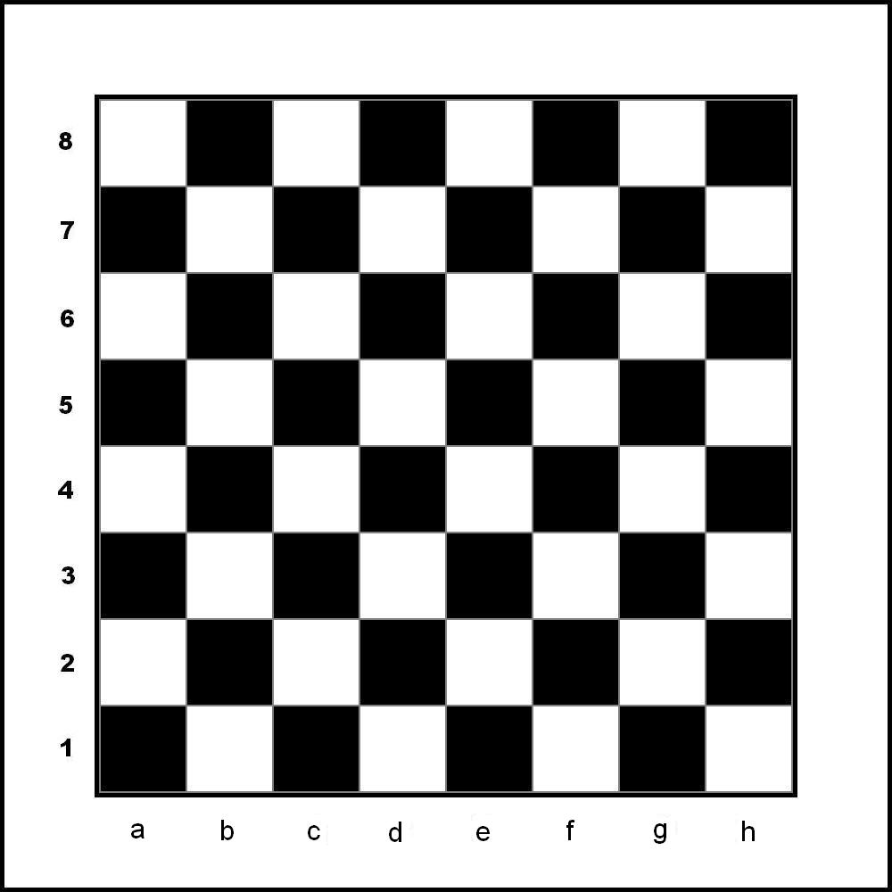

O jogo em si, é "perfeito", segundo o grande mestre Grarry Kasparov:
"Luck in chess comes from your opponent's mistakesque siginifica
A sorte no xadrez vem dos erros do seu oponenteou seja, não há sorte no xadrez, apenas possibilidades "infinitas"
O jogo de xadrez obiamente tem dois lados, o das negras e das brancas. As brancas, tem a obrigatoriedade de jogar primeiro, trazendo a tona as aberturas, existe o das brancas e das negras, as brancas de ataque e as negras de defesa geralmente. O tabuleiro em si, é composto assim:

como pode ver, é formado por casas pretas e brancas. As aberturas como eu havia falado anteriormente, é muito diversificado, há diversas formas de efetuar os primeiros lances, sendo os mais famosos:
- E4
- D4
- F4
- E3
Deve estar se pergunntando o que são essas denominações, essas coisas são aquilo que nos ajuda a identificar onde tal "casa" é. Cada peça anda de determinada forma, é o que iremos ver a seguir.
casas das peças
Peão
O peão em si só anda uma casa para frente, mas quase ele se move pela primeira vez ele pode se mover 2 xasas se desejar. Além disso, ele "come" as peças em apenas uma casa para as casas que estão na frente dele mas apenas nas diagonais. Quando ele anda duas casas e houver um peão ao lado dele quando as duas casas forem andadas, o peão oponente pode simplesmente "comer" o seu peão como se tivesse andado apenas uma casa, vice-versa.
Cavalo
O cavalo, simplesmente anda em "L", pense que ele anda duas casas para frente e uma para qualquer lado entre direita e esquerda em uma casa, ele pode fazer isso na direita, esquerda, cima, baixo apenas. Ele é o único que pode "pular peça, passando por cima."
Bispo
O bispo é aquele que pode simplesmente andar em diagonal apenas. Entretanto, ele pode ir para quantas casas quiser nesta condição
torre
A torre é a mesma coisa que um bispo, mas, ao inves de ir em diagonal, ele vai reto para qualquer lado.
Rei
O rei, é a pea mais relevante do tabuleiro, pois, sem ela o jogo acaba, o objetivo do jogo é literalmente matar o rei , ele em si, anda uma casa para qualquer direção desde que ela não esteja sendo ameaçada
Rainha
Por fim, a rainha. A rainha em si é a peça mais forte em questão de locomoção do jogo. ela é tipo a torre e o bispo juntos.
As pessoas mais influentes do xadrez
| Melhores jogadores | ||
|---|---|---|
| Magnus Carlsen | Gary Casparov | Bobby Fisher |
Aberturas
Agora iremos falar sobre aberturas, aberturas em si são utilizadas no inicio de jogo, os lances iniciais. A abertura é algo obrigatório a ser estudado e aprimorado caso você deseje ser bom neste jogo, a abertura serve para você desenvolver suas peças, ou seja, tirar elas da casa inicial e coloc-las em uma casa que domine o centro. Anteriormente havia falado que as aberturas em si existe diversas, mais de 1400 para você ter noção. mas existem algumas mais famosas e mais utilizadas por diversos motivos. existem aberturas que cauteram umas as outras, mas tudo depende de habilidade. O mais indicado em si é que você pegue 2 aberturas e aprimore elas ao extremo pois essa historia de "abertura que cauteram outras" só ocorre com partidas de grande nível, de mestres de xadrez, aproximadamente por volta dos 2100 de rating. para você ter uma comparação ideia, um jogador intermediario tem por volta de 1600, um iniciante 500 a 1000. Em si para aumentar os seu rating você precisa estudar aberturas, meio de jogo e coisas do gênero, mas isso deixamos para outro momento. Agora, você pode ter o aprendizado de diversas aberturas:
Considerações finais
Os dados informados são para você ter uma base de como jogar xadrez e começar esse novo esporte.
Melhores sites para se jogar xadrez: